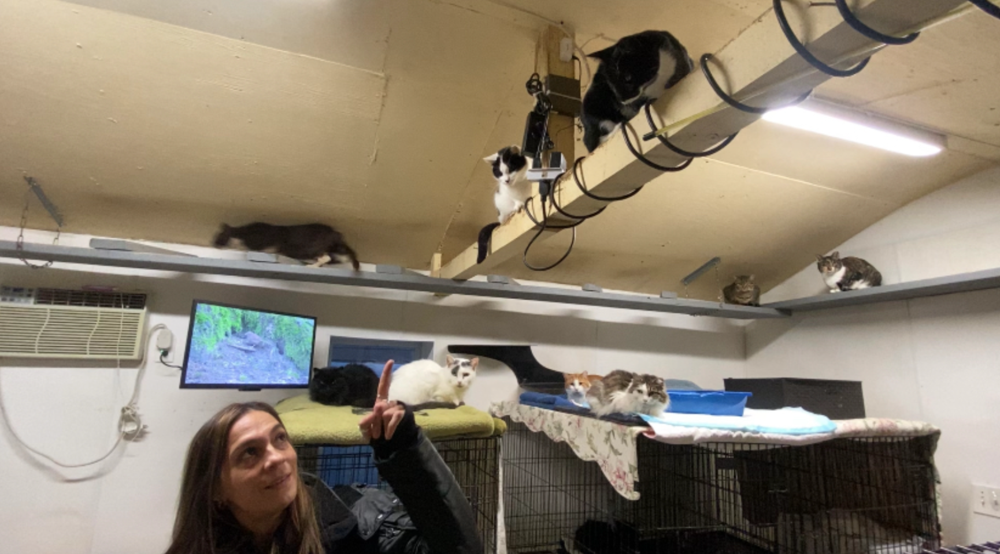
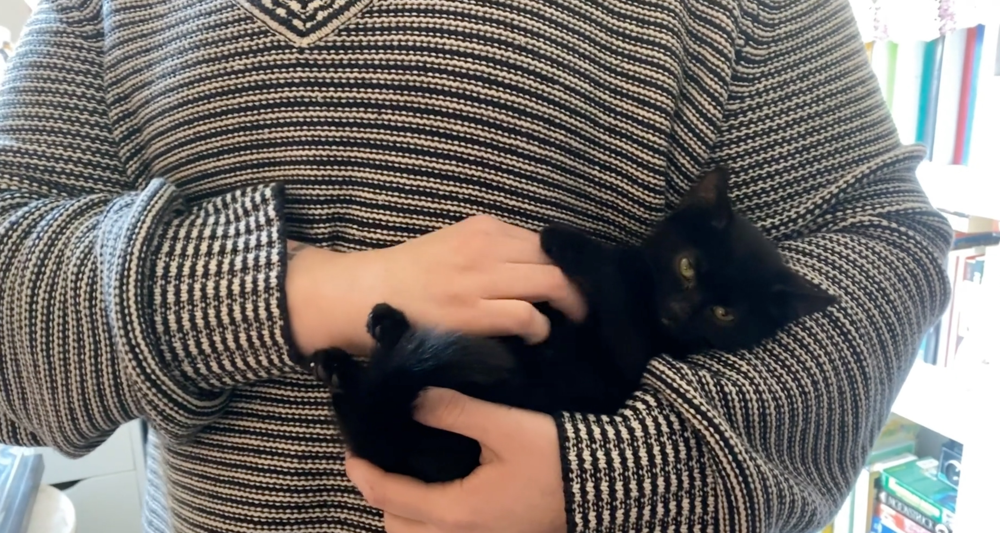

Dogs bred in captivity, a practice also known as 'backyard breeding'. © 2019 PETA.org
In a bid to crack down on animal mistreatment and overpopulation, the New York City Council has passed a
bill prohibiting the sale of animals in pet shops.
The ban on “backyard breeding” passed in a 40-5 vote on Nov. 21 and will forbid the harmful practice of breeding and selling animals across the five boroughs.
"This has come 40 years too late, and there’s so much more to be done,"
says Theresa Samsingh, 59, founder of Queens-based animal shelter organization For Animals, Inc.

Rhein, a 9-year volunteer with For Animals, Inc., introduces the cats at the organization’s modified
garage shelter in South Jamaica, Queens. The garage is outfitted with air filtration, a heating system,
and a monitor that plays cat TV (outdoor footage of squirrels, mice, and birds) to keep them entertained.
Chelsea Pickett, who said that she has fostered cats 66 times and volunteered for Brooklyn-based organization Whiskers-A-Go-Go since 2018, has helped socialize feral cats around humans so they find homes.
“If you have the space, we need you. We also need [widespread] TNR of all animals—one cat equals 45 kittens over the course of their life if they are not fixed,”says Pickett, 30, a Ridgewood resident currently caring for three cats.

Chelsea Pickett, 30, with her 66th foster cat from Whiskers-A-Go-Go.
The plight of local animal shelters
Affordable spay and neuter operations are hard to come by. Most private clinics charge between $250 and $500 per operation, according to a Rover study conducted by the ASPCA and other shelters. Samsingh says she has seen some clinics charge as much as $1,000 for a single operation.
"This has come 40 years too late, and there’s so much more to be done"
“Most of these clinics are private, so operation prices cannot be mandated by the city,” Samsingh says. “But the ASPCA could really help. I see their [mobile clinics] parked on the street, closed, useless.”
Spayed and neutered animals are
less likely to bite and help prevent animal overpopulation by stopping unwanted pregnancies in animals.
However, dog breeders may choose not to spay or neuter their dogs so that they can continue to breed and sell their animals.
Dog bites and their link to backyard breeding
"One cat equals 45 kittens over the course of their life if they are not fixed"
In a data analysis of dog bites reported in Brooklyn, reports climbed
69% between 2015 and 2022.
This points to a potential uptick in dog breeding in Brooklyn between these years.
In both years,
about 89% of dog bites were from dogs who have not been spayed or neutered, which points to a correlation between unfixed dogs who are potentially a product of backyard breeding and amount of dog bites in the borough.
Theresa Samsingh says that she believes that dog bites would decrease if we were to implement mandatory spay/neuter legislation, and that the ban on backyard breeding should also cause a decrease in reported bites.